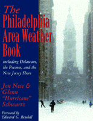

<body bgcolor="#FFFFFF" text="#000000" link="#0000FF" vlink="#CC0000" alink="#CC0000"><center><hr width="350" size="1" align="center" noshade>A book for every season!<hr width="350" size="1" align="center" noshade><p><a href="https://cdcshoppingcart.uchicago.edu/Cart/ChicagoBook.aspx?ISBN=9781566399562&&PRESS=temple" target="_top">Buy this book!</a> | <a href="https://cdcshoppingcart.uchicago.edu/Cart/Cart.aspx?PRESS=temple" target="_top">View Cart</a> | <a href="https://cdcshoppingcart.uchicago.edu/Cart/Cart.aspx?PRESS=temple" target="_top">Check Out</a></p><p></p></center><!--none//--><h1>The Philadelphia Area Weather Book</h1>
<h3>Jon Nese and Glenn "Hurricane" Schwartz, foreword by Edward G. Rendell</h3>
<P>cloth 1-56639-956-4 $50.50, Jul 02, <FONT COLOR=#990033>Available</FONT>
<br>paper 1-59213-391-6 $26.95, Mar 05, <FONT COLOR=#990033>Available</FONT>
<BR> 264 pp
8.375x10
36&nbsp;tables 64&nbsp;map(s) 36&nbsp;figures 159&nbsp;halftones 16&nbsp;color&nbsp;illustrations
</P><h3 align="center"><P><font color="#996633">Winner of the Louis J. Battan Author's Award from The American Meteorological Society,
2005</font></P>
</H3>
<BLOCKQUOTE><I>"When it comes to Philadelphia weather, Jon Nese and Glenn 'Hurricane' Schwartz know what's going on. Now, you can get the best of their knowledge about your weather in a clear, concise, fun book."</I>
<br>&#151<b>Al Roker</b>, NBC's <I>Today Show</I><I></I></BLOCKQUOTE>
<p><i>The Philadelphia Area Weather Book</i> answers all of our questions about the region's weather and climate, from the Poconos and Philadelphia to southern New Jersey and the Jersey Shore to Delaware. The snowiest winter? The hottest summer? The strongest tornado? Signs of global warming? Why can't computers give reliable two-week forecasts? The answers are all here in this new paperback.
<p>Offering a little-known history of the region's pivotal role in the development of weather science as far back as colonial times, <i>The Philadelphia Area Weather Book</i> gives a lively account of what forecasters actually do on a daily basis.
<p>Features include:
<ul><li><p>"Stories from the Trenches": inside stories of forecasting the big storms; a look back with Philadelphia's television pioneers Wally Kinnan, Dr. Francis Davis, and Herb Clarke; and a glimpse at the possibilities for the future climate of our area
<li><p>More than 150 illustrations (including 60 photographs, 54 maps, dozens of diagrams, and a 16-page color section): ranging from the first photographic image of lightning to local residents' photos of the Blizzard of '96 and Hurricane Floyd; from the dynamics of air masses to eroding shore lines and global warming trends
<li><p>Weather tables: statistics for every day of the year, monthly averages as well as temperature and precipitation extremes for Philadelphia, Wilmington, Allentown, and Atlantic City
<li><p>Lists of web resources organized by topic so that readers can follow current weather events using the same sites as the experts do.</ul>
<BR>&nbsp;<h2>Excerpt</h2><P>Excerpt available at <a href="http://www.temple.edu/tempress">www.temple.edu/tempress</a></p>
<BR>&nbsp;<h2>Reviews</h2>
<p><I>"Jon Nese and Glenn Schwartz have put together extensive information regarding weather in the Philadelphia area. Rather than just compiling a book of statistics, they have crafted a fascinating book full of stories going far beyond the seasonal variations in the local weather. Their book is sure to be of interest to Philadelphia residents and will serve as an invaluable source of reference material for teachers, the media, emergency managers, and others with an interest in the history of meteorology."</I>
<br>&#151<b>Dr. Greg Forbes</b>, Severe Weather Expert, The Weather Channel
<p><i>"It offers readers insight into the region's seasonal, and quite changeable, weather conditions, the history of weather observation in the area and a slew of fun facts."</i>
<br>&#151<b><i>Bucks County Courier Times</i></b>
<p><i>"That synergy between science and entertainment is evident throughout the book. Structured with the rich details of a meteorology primer and the thumbnail sketches of an almanac, this compulsively readable volume also functions as a cultural history of the forecasters and storms embedded in our memories."</i>
<br>&#151<b><i>Mayfair News</i></b>
<p><i>"...an outstanding job describing and explaining, in layman's terms, the wide variety of weather phenomenon that affect the city of Philadelphia and its environs."</i>
<br>&#151<b><I><a href="../reviews/1618_review.html">The Bulletin of the American Meteorological Society</a></I></b>, November 2004
<p><i>"[A] great reference tool for any weather-crazed Philadelphian."</i>
<br>&#151<b><i>The Philadelphia Evening Bulletin</i></b>
<p><i>"This new paperback covers all angles of the region's weather and climate, from the Poconos to the Jersey Shore, including the history of the area's role in the development of weather science."</i>
<br>&#151<b><i>Weatherwise</i></b>
<BR>&nbsp;<h2>Contents</h2><P>
<p>Foreword &#150 Edward G. Rendell
<br>Preface
<br>Acknowledgments
<p>1. History of Weather Science and Observing in the Philadelphia Area
<br><i>Observations: It all Starts Here &#149 The Modern National Weather Service</i>
<p>2. Basics of Weather and Weather Forecasting
<br><i>From Folklore to Fundamentals &#149
Basic Building Blocks of Weather and Climate &#149
General Climate Features of the Philadelphia Area &#149
Weather Forecasting</i>
<p>3. Winter: December&#150January&#150February
<br><i>Tough Forecasting on the Edge &#149
Winter Cold &#149
Winter Snow &#149
Historical Winters</i>
<p>4. Spring: March&#150April&#150May
<br><i>From Winter to Spring &#149
Nor'easters &#149
Thunderstorms &#149
Tornadoes &#149
River Flooding &#149
Looking Ahead: glimpses of Summer in Spring</i>
<p>5. Summer: June&#150July&#150August
<br><i>Heat and Humidity &#149
Summer Precipitation: Drenching Ran and Drought &#149
Air Pollution &#149
The Shore</i>
<p>6. Autumn: September&#150October&#150November
<br><i>Autumn: Season of Stability &#149
Hurricanes: The Greatest Storms on Earth &#149
Hurricane Dangers &#149
Hurricane Forecasting &#149
Philadelphia and Coastal Vulnerability &#149
Historical Delaware Valley and Shore Hurricanes &#149
A Philadelphia-area Nightmare Hurricane Scenario &#149
Looking Ahead: Signs of What Is to Come</i>
<p>7. Philadelphia's Future Climate
<br><i>Future Climate: Months and Season;
Future Climate: Years and Decades (and Longer)</i>
<p>Epilogue
<br>Appendix A: Philadelphia Daily and Monthly Climate Data
<br>Appendix B: Climate Data for Wilmington, Delaware; Allentown, Pennsylvania; and Atlantic City, New Jersey
<br>Notes
<br>Bibliography
<br>Additional Web Resources
<br>List of Illustrations
<br>List of Tables
<br>Index
</P><BR>&nbsp;<H2>About the Author(s)</H2>
<table><tr><td valign="top"><img src="/tempress/authors/1618_au1.gif" height="90" width="75"></td><td width="100%" valign="middle"><p><b>Jon Nese</b>, Ph.D. formerly Chief Meteorologist at The Franklin Institute, is Storm Analyst at the Weather Channel and co-author of <i>A World of Weather</i>.</P></td></tr></table><table><tr><td valign="top"><img src="/tempress/authors/1618_au2.gif" height="90" width="75"></td><td width="100%" valign="middle"><p><b>Glenn Schwartz</b> is Chief Meteorologist for NBC-10 in Philadelphia and has been voted most trusted meteorologist in the Philadelphia area by readers of <i>Philadelphia</i> Magazine.</P></td></tr></table>
<BR><H2>Subject Categories</H2>
<p><A HREF="/tempress/philly.html" TARGET="_top">Philadelphia Region</a>
<BR><A HREF="/tempress/science.html" TARGET="_top">Science</a>
</p>
<p align="center"><a href="https://cdcshoppingcart.uchicago.edu/Cart/ChicagoBook.aspx?ISBN=9781566399562&&PRESS=temple" target="_top">Buy this book!</a> | <a href="https://cdcshoppingcart.uchicago.edu/Cart/Cart.aspx?PRESS=temple" target="_top">View Cart</a> | <a href="https://cdcshoppingcart.uchicago.edu/Cart/Cart.aspx?PRESS=temple" target="_top">Check Out</a></p><p><font face="Arial" size="1"><a href="copyright.html" onMouseOver="window.status='Web Copyright Policy';return true;" onMouseOut="window.status=''" title="Web Copyright Policy">&copy;</a> 2015 <a href="http://www.temple.edu" target="new" onMouseOver="window.status='Link to Temple University home page';return true;" onMouseOut="window.status=''" title="Link to Temple University home page">Temple University</a>. All Rights Reserved. http://www.temple.edu/tempress/titles/1618_reg.html</font></p>